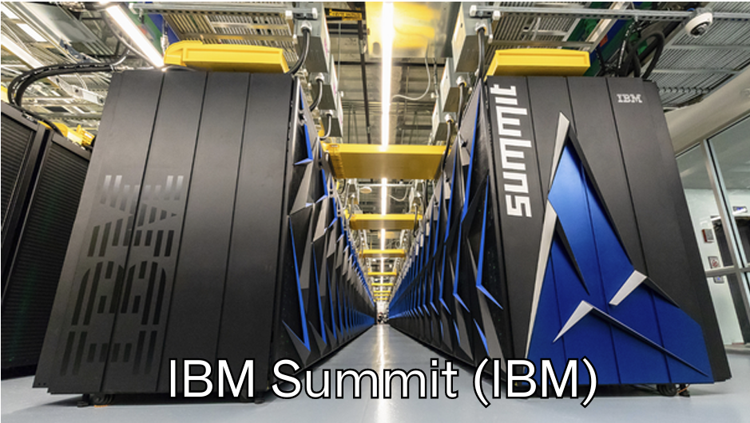
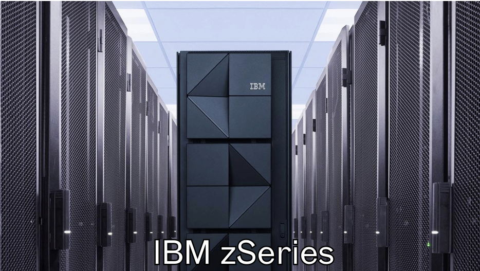
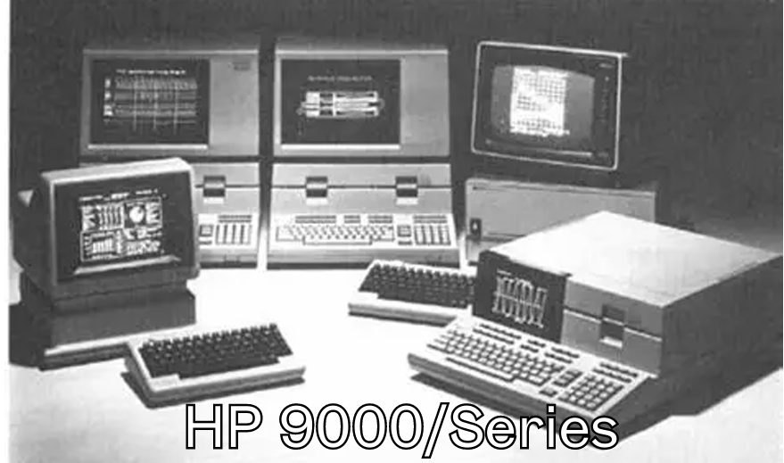
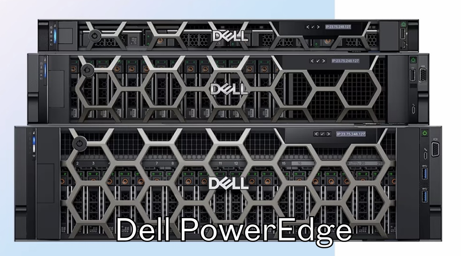
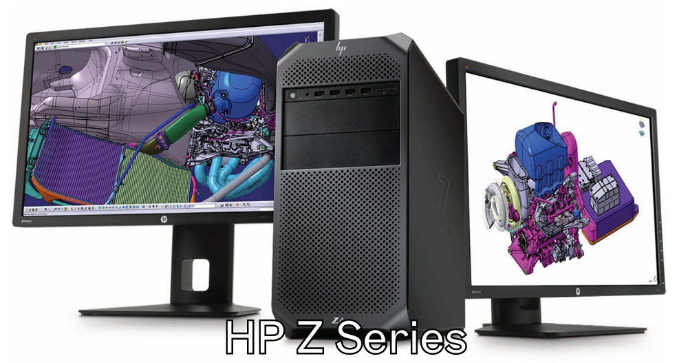
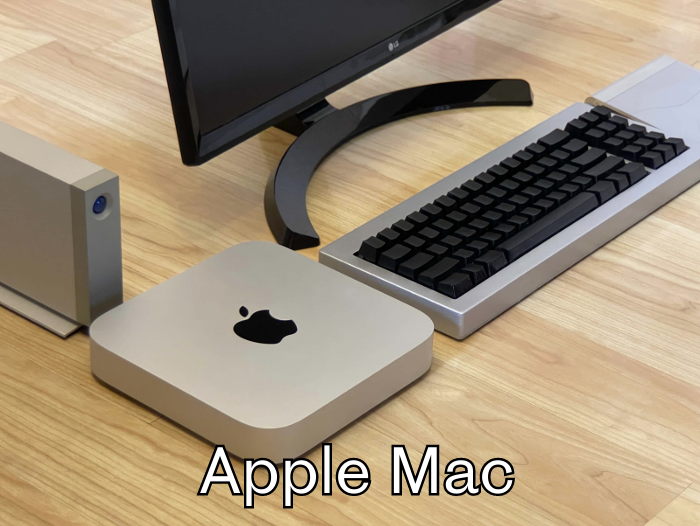

Portfolio # 6:
Comparative Study on Different Types of Computers

Figure 1. Portfolio 6 Cover Page
Introduction
Computers come in a spectrum of sizes and capabilities, each tailored to different scales of work and complexity. From massive, purpose-built machines used in scientific research to compact devices that fit on a desk or in a pocket, the variety reflects distinct design goals and performance envelopes. As I research deeper about this topic, I can further examine how processing power, memory capacity, energy use, and practical applications diverge across categories such as supercomputers, mainframes, minicomputers, servers, workstations, and microcomputers (Becher, 2024). By comparing these types, we can see how architectural choices, such as parallel processing, multiprocessor configurations, and targeted I/O capabilities, shape what they can do and how efficiently they operate (Size, 2024). The goal is to provide a clear framework for selecting the appropriate computing solution for a given task, whether it involves high-speed simulations, large-scale data processing, enterprise transaction management, specialized engineering workloads, or everyday tasks.
Discussion
Computers vary not only in size but also in architectural focus, which shapes how they handle tasks, manage data, and deliver results (kohli, 2025). Supercomputers sit at the apex of raw processing power, designed to perform trillions of operations per second through massive parallelism and specialized interconnects, making them indispensable for large-scale simulations, climate modeling, and advanced scientific research. In contrast, mainframe computers emphasize reliability, scalability, and centralized control, handling thousands of simultaneous transactions and users within institutions such as banks and government agencies, where consistent uptime and robust I/O management are paramount. Between these extremes lie minicomputers and servers, which provide multi-user capabilities and networked services at a more accessible scale, supporting departmental workloads, data storage, and centralized applications that require dependable performance without the extreme resources of a mainframe or a supercomputer (Different Types of Computers: Size, Purpose & Working Principle, n.d.).
Workstations and microcomputers complete the landscape by addressing more targeted, user-centric needs. Workstations pair high-end processors, substantial memory, and advanced graphics capabilities to support engineering, design, and scientific visualization tasks where precision and speed matter (Wang, 2020). Microcomputers, including desktops, laptops, tablets, and phones, are optimized for everyday productivity, communication, and entertainment, delivering broad versatility at the lowest cost and smallest physical footprints. Together, these categories illustrate how design choices such as processor architecture, memory bandwidth, energy efficiency, and I/O subsystems define not only raw performance, but also the practical feasibility and cost of their deployment in real-world contexts (Rana, 2021). This layered view helps explain why different tasks require different computing solutions, from exploratory research and enterprise-scale data processing to everyday computing and mobile productivity.
Comparative Table of the Types of Computers
| Types of Computers | Name/Brand | CPU | Memory | Processing Speed | Calculating Power | Working Principle | Energy Consumption | Field of Use |
|---|---|---|---|---|---|---|---|---|
| Supercomputer | Summit (IBM) | Multi-core, high GHz | 2+ PB | TFLOPS (10¹² flops/sec) | Highest (10¹⁵ FLOPS) | Parallel processing of massive data | Very high | Scientific simulations |
| Mainframe Computer | IBM zSeries | Multi-core, vector processing | Up to TBs | High MIPS (10⁶/sec) | Very high (10¹¹ MIPS) | Handles many concurrent tasks | High | Banking, large business |
| Mini Computers | HPE Integrity | Multi-core, moderate GHz | 16-256 GB | Moderate MIPS | Moderate | Departmental processing | Moderate | Factories, midsize businesses |
| Server | Dell PowerEdge | Multi-core, server class | 64 GB-512 GB | High GHz, multi-core | Moderate to high | Manages network resources/databases | Moderate to high | Web hosting, cloud |
| Workstation | HP Z-Series | Multi-core, higher GHz | 32-256 GB | High (for graphics/CAD) | Moderate to high | Intensive graphical or technical tasks | Moderate | Design, scientific modeling |
| Micro Computers | Dell XPS, Mac | Dual/quad-core, Moderate GHz | 4-32 GB | Standard consumer speed | Standard | Handles individual applications | Low | Home, office, education |
Examples of Each Computer Type
| Types of Computers | Sample Image | Description | Usage |
|---|---|---|---|
| Supercomputer |  | The most powerful class of computing systems, built to perform massively parallel computations across thousands of processors and accelerators, achieving extremely high theoretical throughput. | Used for large-scale scientific simulations, climate modeling, computational chemistry, astrophysics, and AI research requiring extreme computation. |
| Mainframe Computers |  | A highly reliable, scalable system designed to process vast transaction volumes and support many simultaneous users with strong I/O and virtualization capabilities. | Enterprise transaction processing in banking, insurance, government data centers, and bulk data management. |
| Mini Computers |  | A mid-range system offering multi-user capabilities and substantial processing power, positioned between mainframes and microcomputers. | Departmental workloads, mid-sized business applications, and centralized services for multiple users. |
| Server |  | A network-oriented machine optimized to host services, applications, and storage to clients over a network. | Web hosting, cloud services, enterprise databases, file storage, and application backends. |
| Workstations |  | A high-performance desktop designed for specialized professional workloads, combining powerful CPUs, ample memory, and advanced graphics. | Engineering design (CAD), scientific computing, 3D rendering, data analysis, and visualization tasks. |
| Micro Computers |  | The smallest and most ubiquitous class, including desktops, laptops, tablets, and mobile devices, built for general-purpose computing. | Personal productivity, education, multimedia, light development, communication, and everyday tasks. |
Comparison: Mini, Micro, Workstation, Server
| Types of Computer | Processing Speed | Memory Capacity | Power Consumption | Typical Usage |
|---|---|---|---|---|
| Mini Computers | Moderate | Up to 256 GB | Moderate | Departmental |
| Micro Computers | Standard | 4-32 GB | Low | Personal, office |
| Wokrstations | High (graphics/CAD) | 32-256 GB | Moderate | Design, technical |
| Servers | High, multi-core | 64-512 GB | Moderate to high | Network, cloud |
References
Becher, B. (2024, July 31). 6 Types of Computers to Know | Built In. Built In.
https://builtin.com/articles/types-of-computers
Size, C. (2024, December 12). Types of Computers Classified by Size and Their Characteristics. Oncrashreboot.com.
https://oncrashreboot.com/computer-literacy-study-guide/understanding-computer-classifications/types-of-computers-by-size/
kohli, virat. (2025). Types of computer and their differences. Scribd.
https://www.scribd.com/document/561019384/Types-of-computer-and-their-differences
Different Types of Computers: Size, Purpose & Working Principle. (n.d.). Testbook.
https://testbook.com/computer-awareness/types-of-computer
Wang, M. (2020). Topic B: Types of computers. Opentextbc.ca.
https://opentextbc.ca/computerstudies/chapter/types-of-computers/
Rana, K. (2021, January 25). Types of Computers | Explained with Examples. ArtOfTesting.
https://artoftesting.com/types-of-computers#google_vignette
References used in the table:
IBM Summit (IBM) supercomputer’ - Bing. (2025). Bing.
https://www.bing.com/images/search?q=IBM+Summit+(IBM)+supercomputer%27&FORM=HDRSC3
ibm z series mainframe - Bing. (2025). Bing.
https://www.bing.com/images/search?q=ibm%20z%20series%20mainframe&qs=n&form=QBIR&sp=-1&lq=0&pq=ibm%20zseries%20mainfr&sc=2-18&cvid=D937CA80169B4FC0B2D707090930A973&first=1
dell poweredge servers - Bing. (2025). Bing.
https://www.bing.com/images/search?q=dell%20poweredge%20servers&qs=SC&form=QBIR&sp=1&lq=0&pq=dell%20poweredge%20swerv&sc=10-20&cvid=21DC42A6D82E444D9D6E4F20B91BE994&first=1&ajf=100
Apple Mac microcomputer - Bing. (2024). Bing.
https://www.bing.com/images/search?q=Apple+Mac+microcomputer&go=Search&qs=ds&form=QBIR
HP Z Series workstation - Bing. (2025). Bing.
https://www.bing.com/images/search?q=HP+Z+Series+workstation&FORM=QBIR